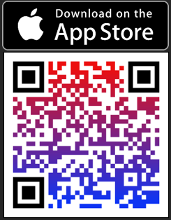
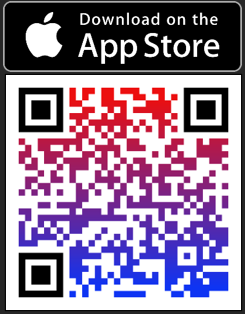
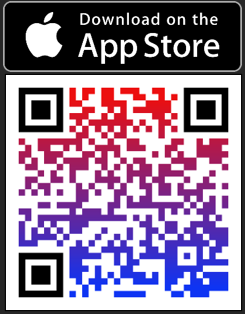

IceStats Support Site
Your go-to resource for help with the IceStats iOS app – the ultimate hockey stats tracker.

Your go-to resource for help with the IceStats iOS app – the ultimate hockey stats tracker.
IceStats is an iOS application designed for hockey enthusiasts, players, and coaches to track and manage player and team statistics. Built with CoreData for seamless data storage, it supports tracking skater stats (goals, assists, hits, etc.), goalie stats (saves, GAA, etc.), and team entries.
Whether you're managing a single player's performance or entering stats for an entire team, IceStats provides intuitive summaries, editing capabilities, and more.
App Version: Based on code from September 2025 (e.g., v1.0).
1. Launch the app and tap "Get Started" to add players.
2. Enter player details: Name, Team, Position, Jersey Number, Season.
3. Save and repeat for your roster.
For Skaters:
For Goalies:
1. Select a player from the list.
2. View game-by-game stats in a table with horizontal scrolling.
3. Tap headers to sort (ascending/descending).
4. Swipe left on rows to edit or delete entries.
Totals row at the bottom aggregates all stats.
1. Select a team.
2. Enter shared details (date, opponent).
3. Input stats for each skater and goalie in the team.
4. Save to update all players' CoreData records.
In summaries, swipe for options. Edits use similar forms with pre-filled data.
Deletions are confirmed via alerts.
A: IceStats uses CoreData, which is stored in your iOS device's app container. Use iCloud Backup or export via Files app if needed.
A: Calculated fields like PTS, GAA, etc., are auto-updated based on inputs to prevent errors.
A: Yes, assign seasons to players and filter/view accordingly.
A: The app validates inputs and shows alerts for errors.
A: Yes, enter stats separately; summaries handle per-player views.
A: Ensure iOS is up-to-date. Contact support with details (device model, iOS version, steps to reproduce, the more details the better).
If you need help, have feedback, or found a bug, reach out!
Email: icestatshockey@gmail.com
Developer: Jacob Garcia